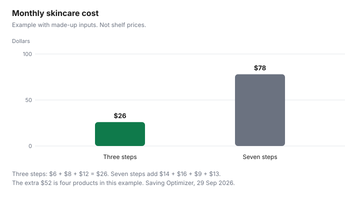

Personal Care · Canada
Skincare Over 50 on a Budget: What Evidence Supports and What to Skip
After 50, the skincare aisle gets louder and the bottles get smaller. The useful split is what a Canadian rule actually says, and what a label is only claiming. Sunscreen is the step with a drug or natural-health number. A moisturiser is a cosmetic you either finish or waste. A seven-step routine is a monthly bill. This page prices that bill with made-up inputs and points at the official pages. The short routine is the drugstore skincare guide. How to read a sunscreen number is the sunscreen guide. Nothing here is medical advice, and nothing here names a best cream.
Key takeaways
- Health Canada’s sunscreens page says to use a broad-spectrum sunscreen with an SPF of 30 or higher, and to reapply at least every two hours. Sunscreens are non-prescription drugs or natural health products.
- A cosmetic, on the cosmetics page, is any substance used to clean, improve, or change the complexion, skin, hair, nails, or teeth. Claims must not mislead. A notification is not described there as a drug licence.
- This page does not cite a hotlist concentration for retinol, so it states none. A DIN is a Drug Product Database search.
- Example with made-up inputs: a three-step month is $26. A seven-step month is $78. Price per millilitre can reverse which bottle looks expensive.
- No separate “mature skin” sunscreen rule is cited. The label work is the same DIN or NPN and the same millilitres.
Sunscreen as the base
Health Canada’s sunscreens page, checked 29 Sep 2026, says to use a broad-spectrum sunscreen with an SPF of 30 or higher. Broad spectrum means protection from UVA and UVB.
Apply it generously, at least 15 minutes before you go into the sun, and reapply at least every two hours, and after swimming, sweating, or towelling off. In Canada, sunscreens are classified as non-prescription drugs or natural health products, depending on the active ingredients, and they are regulated under the Food and Drugs Act and its regulations. A DIN or an NPN on the label is how you can see that classification. The sunscreen guide is the price-per-millilitre version of that label, including what a small bottle does to the price of one application.
Nothing in the sources cited here creates a second sunscreen category for skin over 50. A box that says mature, firming, or anti-aging still needs the same number and the same filters. If it has no DIN and no NPN, it is not doing the sunscreen job described on that page, even if a moisturiser sits underneath it. The drugstore routine keeps sunscreen as the daytime step on days you are in the sun, and treats extra bottles as optional.
Retinoids: OTC vs prescription
Retinol on a cosmetic bottle is inside the cosmetic definition: a substance to clean, improve, or change the skin. This guide does not cite a Cosmetic Ingredient Hotlist concentration limit for retinol, so it does not state one.
Follow the label’s own instructions for how to start. The hotlist, checked 29 Sep 2026 as Health Canada’s list of ingredients described as prohibited or restricted in cosmetics, is where a restricted name would be spelled out. A name that is absent is not treated on this page as a certificate that the ingredient is fine.
A prescription retinoid is a different object. It has a DIN if it is a drug, and the Drug Product Database, checked 29 Sep 2026, is the search by that number. Whether you should use one is a prescriber’s decision, not a cheaper cosmetic this page can pick. Ontario’s pharmacist prescribing for minor ailments is a defined list, on the pharmacist guide. Do not assume a retinoid is on it. Health costs that show up around 65, including drugs that are actually prescribed, are the turning-65 guide. This page does not move a face cream onto that list.
Moisturiser basics
A moisturiser without a DIN or an NPN is a cosmetic. Compare the millilitres, the ingredient list in the order the package prints it, and whether it contains a fragrance you already know you will not tolerate.
The toiletries guide is the same comparison for a store brand. A jar you do not finish is not cheaper than a smaller one you do. Price per millilitre, in the last section, stops a tiny expensive bottle from hiding behind a low sticker.
Moisturiser is not sunscreen. If the daytime bottle does not show an SPF with a DIN or an NPN, you still need the sunscreen step on days you are in the sun. Stacking three moisturisers does not create that step. It creates three open jars.
Marketing claims to ignore
Health Canada’s cosmetics page says claims on a label or in an ad must be accurate so they do not mislead people. “Reverses aging,” “repairs DNA,” and “clinically proven” without a source you can read are claims, not results published on a government page.
A cosmetic notification tells Health Canada a product is being sold. The cosmetics page does not describe that form as an approval of the claim. Vitamin C on a label is an ingredient name. This page does not cite a Health Canada result for what vitamin C does to skin over 50, so it does not state one.
Ignore a routine count. Seven steps are seven purchases. The evidence this page will repeat is sunscreen as Health Canada regulates it, a moisturiser you finish, and a retinoid only when you know whether it is a cosmetic or a DIN. Everything else is optional spending. If a product is recalled, search the name on recalls-rappels.canada.ca, checked 29 Sep 2026. This page does not cite a skincare recall.
Monthly cost
Price per millilitre is the bottle price divided by the millilitres on the label. Example with made-up inputs.
A 50 mL moisturiser at $20 is 40 cents per mL. A 30 mL moisturiser at $18 is 60 cents per mL. The bottle with the higher sticker is the cheaper liquid. Your bottles replace both prices. Do the division before you decide the luxury jar is the dearer one.
A month is the bottles you will use up, or the fraction of a bottle you will use up. Example with made-up inputs. Three steps: cleanser $6, moisturiser $8, sunscreen $12, which is $26. Seven steps: those three, plus a serum at $14, an eye cream at $16, a toner at $9, and an oil at $13. Fourteen plus 16 plus 9 plus 13 is $52. Twenty-six plus 52 is $78. The chart is $26 beside $78. The sunscreen dollars in the example are not a real bottle. The sunscreen guide is where a real DIN and a real size get divided. A reaction, a changing spot, or a prescription question is a clinician, not another step. This is not medical advice.
| Item | What a cited source supports | What marketing often adds |
|---|---|---|
| Sunscreen | Broad spectrum, SPF 30 or higher, reapply at least every two hours. Drug or natural health product. DIN or NPN. | A “mature skin” name. No separate rule is cited here. |
| Moisturiser | A cosmetic if no DIN or NPN. Compare millilitres and the ingredient list. | That a higher price works better. Not supported by the sources cited here. |
| Retinoids | Cosmetic retinol: follow the label. This page states no hotlist limit. Prescription: a DIN and a prescriber. | That a cosmetic and a prescription are the same product. They are not. |
| Vitamin C | An ingredient name on a cosmetic label. No result is cited here. | A specific anti-aging result. Not stated in the sources cited here. |
| Anti-aging claims | Claims must be accurate and must not mislead. | Reverses aging, repairs, or a study you cannot read. Treat as a claim. |
| Bottle | Made-up price and size | Per mL | Your bottle |
|---|---|---|---|
| Larger | $20 for 50 mL | $0.40 | |
| Smaller | $18 for 30 mL | $0.60 |

Sources & date stamps
- Health Canada, Sunscreens, checked 29 Sep 2026. Broad-spectrum SPF 30 or higher. Apply at least 15 minutes before sun exposure. Reapply at least every two hours, and after swimming, sweating, or towelling off. Classified as non-prescription drugs or natural health products under the Food and Drugs Act.
- Health Canada, Cosmetic safety, page details 2025-12-29, checked 29 Sep 2026. Cosmetic definition. Claims must not mislead. Notification informs Health Canada that a cosmetic is being sold. Hotlist linked as restricted and prohibited ingredients.
- Health Canada, Cosmetic Ingredient Hotlist, checked 29 Sep 2026. The list of ingredients described as prohibited or restricted. No retinol concentration is stated on this page.
- Health Canada, Drug Product Database, checked 29 Sep 2026. Search by DIN. No cream is named.
- Health Canada, Find recalls, advisories and safety alerts, checked 29 Sep 2026. A search. No skincare recall is cited.
- Monthly dollars and the per-millilitre pair are an example with made-up inputs.
Frequently asked questions
What skincare actually helps after 50?
This page will stand behind two labels, not a routine length. Sunscreen, used as Health Canada describes it, is a drug or a natural health product with a DIN or an NPN, not a cosmetic with a pretty box, and a moisturiser you will actually use is a cosmetic: read the ingredient list and the size. Anything past that is optional spending, and the drugstore routine guide keeps the same three steps. This is not medical advice.
Is retinol worth it?
A cosmetic retinol is a cosmetic label, and this page does not cite a Cosmetic Ingredient Hotlist concentration for it, so it does not state one. A prescription retinoid is a drug: if the box has a DIN, search the Drug Product Database, and the decision to use it belongs with a prescriber. Worth it, as money, is whether you finish the product, because a tube you stop after a week is the full price for a week. This is not a treatment recommendation.
Do I need special sunscreen for mature skin?
This page does not cite a separate Health Canada rule for mature skin. The sunscreens page says to use a broad-spectrum sunscreen with an SPF of 30 or higher, and to reapply at least every two hours. A box that says mature, and costs more, is still the same homework: DIN or NPN, the filters, and the millilitres, and the sunscreen guide does that division. A higher price is not evidence.
Are expensive anti-aging creams better?
This page does not say they are. Health Canada’s cosmetics page says a claim must be accurate so it does not mislead, and price per millilitre is the shopping test because a smaller bottle can cost more per millilitre. Example with made-up inputs: 50 mL at $20 is 40 cents per mL, and 30 mL at $18 is 60 cents per mL. The dearer-looking bottle is the cheaper one per millilitre, inside that example only.
When should I see a dermatologist?
See a clinician for a spot that is changing, a reaction that does not settle, or a prescription question, because this page cannot tell you that a cream will fix it. Ontario pharmacists can prescribe for some minor ailments, which is a different list, on the pharmacist guide. Costs around age 65 are the turning-65 guide. This is education, not medical advice.
Researched and drafted with AI assistance and fact-checked against official Canadian sources. How we create content.
Disclosure: Amazon.ca storefronts are an offer type. Saving Optimizer may earn a commission if a partner link is added later. No partnership is claimed with Amazon, a salon, a clinic, or a brand. Education only. This page does not name a best product.